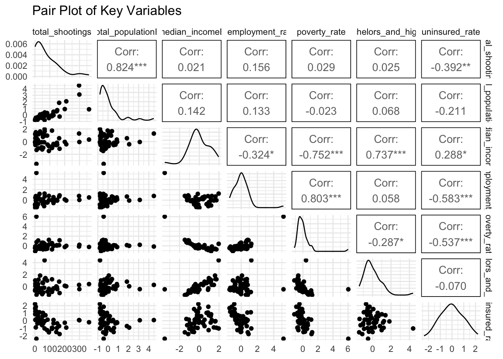
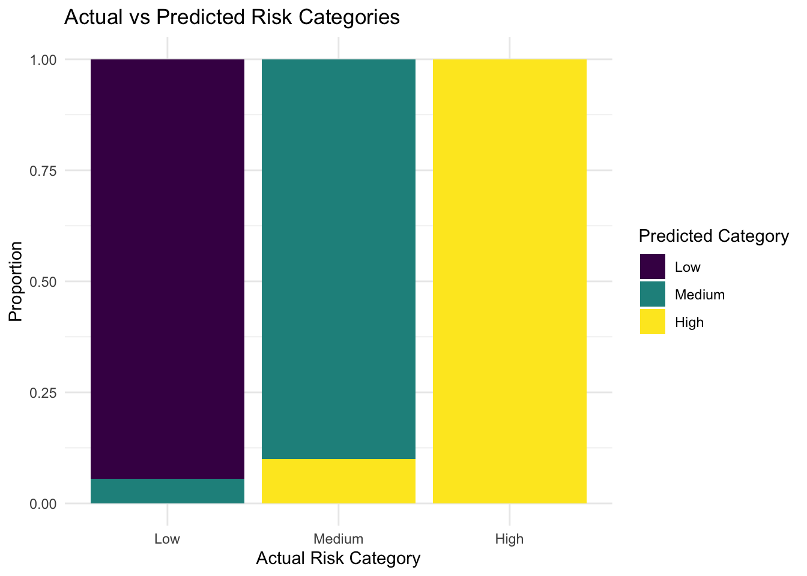
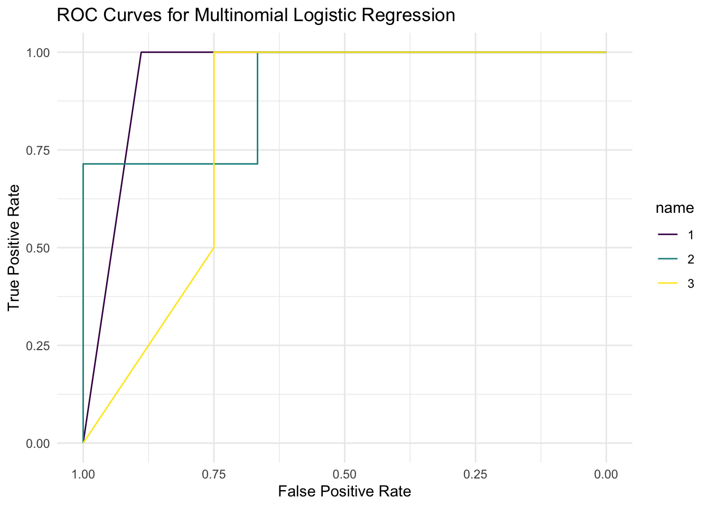
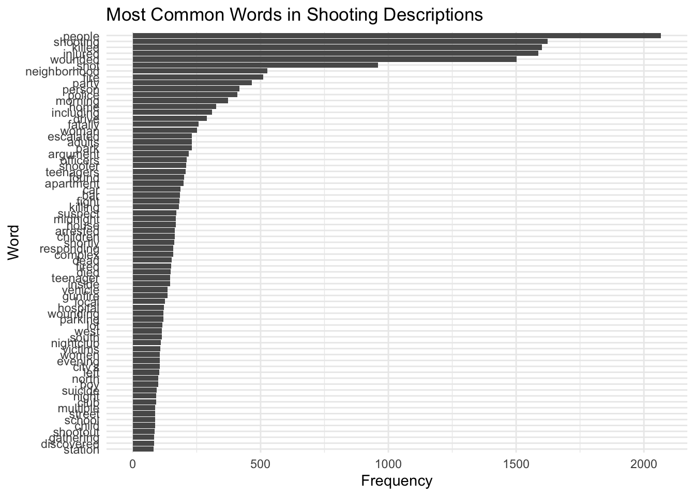

We start by merging the datasets and scaling the numeric variables for better interpretability in modeling.
library(dplyr)
library(tidyr)
library(MASS)
library(modelr)
library(ggplot2)
# Load and clean mass shootings data
mass_shootings <- read.csv("data/mass_shootings_2018_2024_cleaned.csv") |>
mutate(State = case_when(
State == "Washington, D.C." ~ "District of Columbia",
TRUE ~ State
))
# Load and clean census data
census_data <- read.csv("state_data.csv") |>
rename(State = NAME) |>
mutate(across(where(is.numeric), ~ as.numeric(scale(.))))
# Merge datasets by State
scaled_data <- mass_shootings |>
group_by(State) |>
summarise(total_shootings = n(),
total_deaths = sum(Dead, na.rm = TRUE),
total_injuries = sum(Injured, na.rm = TRUE)) |>
left_join(census_data, by = "State")Before modeling, we explore the relationships between shooting frequencies and socio-economic variables. First we have to remove NAs before doing correlation analysis.
scaled_data <- scaled_data %>%
drop_na(total_shootings, total_populationE, median_incomeE,
unemployment_rate, poverty_rate, bachelors_and_higher)library(ggcorrplot)
# Compute correlation matrix for scaled data
cor_matrix <- scaled_data %>%
dplyr::select(total_shootings, total_populationE, median_incomeE, unemployment_rate,
poverty_rate, bachelors_and_higher) %>%
cor()
# Visualize correlation matrix
ggcorrplot(cor_matrix,
method = "circle",
type = "lower",
lab = TRUE,
lab_size = 3,
title = "Correlation Matrix of Variables",
colors = c("blue", "white", "red"))The correlation matrix highlights strong positive relationships, particularly between total_shootings and total_populationE (r=0.82), indicating that states with larger populations experience more shootings. Other variables, such as poverty_rate and bachelors_and_higher, show weaker correlations with shootings, suggesting less direct influence.
library(GGally)
# Select relevant variables for pair plot
pair_data <- scaled_data |>
dplyr::select(total_shootings, total_populationE, median_incomeE,
unemployment_rate, poverty_rate, bachelors_and_higher, uninsured_rate)
# Plot pairwise relationships
ggpairs(pair_data,
title = "Pair Plot of Key Variables")
The pair plot shows total_shootings is positively correlated with total_populationE and is right-skewed, indicating a few high-shooting states. Scatterplots confirm strong relationships with population, while other variables like poverty_rate show weaker trends. This supports further investigation into population as a key factor.
Poisson regression is used for modeling count data, like the total number of shootings per state.
# Poisson regression model
poisson_model <- glm(total_shootings ~ total_populationE + median_incomeE +
unemployment_rate + poverty_rate + bachelors_and_higher +
uninsured_rate + vacancy_rate,
family = poisson(link = "log"),
data = scaled_data)
summary(poisson_model)##
## Call:
## glm(formula = total_shootings ~ total_populationE + median_incomeE +
## unemployment_rate + poverty_rate + bachelors_and_higher +
## uninsured_rate + vacancy_rate, family = poisson(link = "log"),
## data = scaled_data)
##
## Coefficients:
## Estimate Std. Error z value Pr(>|z|)
## (Intercept) 3.78983 0.02645 143.302 < 2e-16 ***
## total_populationE 0.52032 0.01385 37.565 < 2e-16 ***
## median_incomeE -1.18236 0.06457 -18.310 < 2e-16 ***
## unemployment_rate 0.49933 0.05295 9.429 < 2e-16 ***
## poverty_rate -1.13064 0.07441 -15.196 < 2e-16 ***
## bachelors_and_higher 0.29858 0.04118 7.251 4.12e-13 ***
## uninsured_rate -0.70306 0.02843 -24.726 < 2e-16 ***
## vacancy_rate -0.60066 0.03384 -17.748 < 2e-16 ***
## ---
## Signif. codes: 0 '***' 0.001 '**' 0.01 '*' 0.05 '.' 0.1 ' ' 1
##
## (Dispersion parameter for poisson family taken to be 1)
##
## Null deviance: 4124.31 on 50 degrees of freedom
## Residual deviance: 820.49 on 43 degrees of freedom
## AIC: 1111.5
##
## Number of Fisher Scoring iterations: 5The Poisson regression model provides a good initial framework to analyze count data, like the total number of shootings. The coefficients indicate the log-relative rate of shootings for each predictor. For instance:
total_populationE has a positive coefficient, meaning states with larger populations are associated with higher shooting rates.
median_incomeE have significant negative coefficients, suggesting states with higher income levels experience fewer shootings.
The residual deviance (820.49) is much smaller than the null deviance (4124.31), indicating the model explains a substantial portion of the variability.
Dispersion Test: To determine if overdispersion exists (dispersion parameter >> 1), calculate the dispersion ratio:
dispersion_ratio <- summary(poisson_model)$deviance / summary(poisson_model)$df.residual
dispersion_ratio## [1] 19.08125Since the dispersion ratio is significantly greater than 1, it indicates overdispersion, and a Negative Binomial regression model should be used.
# Negative binomial regression model
negbin_model <- glm.nb(total_shootings ~ total_populationE + median_incomeE +
unemployment_rate + poverty_rate + bachelors_and_higher +
uninsured_rate + vacancy_rate,
data = scaled_data)
summary(negbin_model)##
## Call:
## glm.nb(formula = total_shootings ~ total_populationE + median_incomeE +
## unemployment_rate + poverty_rate + bachelors_and_higher +
## uninsured_rate + vacancy_rate, data = scaled_data, init.theta = 3.254641924,
## link = log)
##
## Coefficients:
## Estimate Std. Error z value Pr(>|z|)
## (Intercept) 3.69770 0.08510 43.450 < 2e-16 ***
## total_populationE 0.60325 0.09043 6.671 2.55e-11 ***
## median_incomeE -1.08947 0.29819 -3.654 0.000259 ***
## unemployment_rate 0.44184 0.21927 2.015 0.043904 *
## poverty_rate -1.13688 0.32949 -3.450 0.000560 ***
## bachelors_and_higher 0.28170 0.17230 1.635 0.102057
## uninsured_rate -0.88116 0.11467 -7.684 1.54e-14 ***
## vacancy_rate -0.65904 0.12637 -5.215 1.84e-07 ***
## ---
## Signif. codes: 0 '***' 0.001 '**' 0.01 '*' 0.05 '.' 0.1 ' ' 1
##
## (Dispersion parameter for Negative Binomial(3.2546) family taken to be 1)
##
## Null deviance: 234.887 on 50 degrees of freedom
## Residual deviance: 53.801 on 43 degrees of freedom
## AIC: 480.16
##
## Number of Fisher Scoring iterations: 1
##
##
## Theta: 3.255
## Std. Err.: 0.721
##
## 2 x log-likelihood: -462.161When analyzing the results, I noticed something intriguing about the
coefficient for poverty_rate in the Negative Binomial
regression model. Its coefficient is negative
(-1.13688), which suggests that as the poverty rate
increases by one unit (typically 1%), the expected log count of
shootings decreases. Translating this into real-world terms using the
exponential transformation:
\[ \text{Relative Rate Change} = e^{-1.13688} \approx 0.32 \]
This means that for every 1% increase in the poverty rate, the total shootings decrease by approximately 68%. At first glance, this seems counterintuitive because, logically, higher poverty rates are often associated with more social stress and potentially higher levels of violence.
My first suspicion was multicollinearity. Since poverty rate often
correlates with other socio-economic factors, such as
median_incomeE and unemployment_rate, it’s
possible that the model distributes the explanatory power across these
variables.
To test this, let’s calculated the Variance Inflation Factor (VIF):
library(car)
vif(negbin_model)## total_populationE median_incomeE unemployment_rate
## 1.258566 13.107502 6.427476
## poverty_rate bachelors_and_higher uninsured_rate
## 15.167083 4.327835 1.678355
## vacancy_rate
## 1.915198The VIF results reveal multicollinearity, particularly for median_incomeE (VIF = 13.11) and poverty_rate (VIF = 15.17), suggesting their effects overlap with each other and unemployment_rate (VIF = 6.43). This multicollinearity may distort the coefficients, especially for poverty_rate, which shows a counterintuitive negative relationship.
poverty_rate:model_no_poverty <- glm.nb(total_shootings ~ total_populationE + median_incomeE +
unemployment_rate + bachelors_and_higher +
uninsured_rate + vacancy_rate,
data = scaled_data)
summary(model_no_poverty)##
## Call:
## glm.nb(formula = total_shootings ~ total_populationE + median_incomeE +
## unemployment_rate + bachelors_and_higher + uninsured_rate +
## vacancy_rate, data = scaled_data, init.theta = 2.673428227,
## link = log)
##
## Coefficients:
## Estimate Std. Error z value Pr(>|z|)
## (Intercept) 3.721678 0.092403 40.277 < 2e-16 ***
## total_populationE 0.646115 0.099526 6.492 8.48e-11 ***
## median_incomeE -0.259945 0.192885 -1.348 0.178
## unemployment_rate -0.093382 0.125529 -0.744 0.457
## bachelors_and_higher -0.006344 0.168355 -0.038 0.970
## uninsured_rate -0.839009 0.123867 -6.773 1.26e-11 ***
## vacancy_rate -0.669868 0.138744 -4.828 1.38e-06 ***
## ---
## Signif. codes: 0 '***' 0.001 '**' 0.01 '*' 0.05 '.' 0.1 ' ' 1
##
## (Dispersion parameter for Negative Binomial(2.6734) family taken to be 1)
##
## Null deviance: 196.729 on 50 degrees of freedom
## Residual deviance: 54.162 on 44 degrees of freedom
## AIC: 487.56
##
## Number of Fisher Scoring iterations: 1
##
##
## Theta: 2.673
## Std. Err.: 0.572
##
## 2 x log-likelihood: -471.565Check the VIF of model_no_poverty
vif(model_no_poverty)## total_populationE median_incomeE unemployment_rate
## 1.267787 4.716443 1.902787
## bachelors_and_higher uninsured_rate vacancy_rate
## 3.459854 1.723762 1.944305There is still a multicollinearity, let’s exclude
bachelors_and_higher
model_no_poverty_educate <- glm.nb(total_shootings ~ total_populationE + median_incomeE +
unemployment_rate +
uninsured_rate + vacancy_rate,
data = scaled_data)
summary(model_no_poverty_educate)##
## Call:
## glm.nb(formula = total_shootings ~ total_populationE + median_incomeE +
## unemployment_rate + uninsured_rate + vacancy_rate, data = scaled_data,
## init.theta = 2.674675624, link = log)
##
## Coefficients:
## Estimate Std. Error z value Pr(>|z|)
## (Intercept) 3.72178 0.09229 40.325 < 2e-16 ***
## total_populationE 0.64693 0.09647 6.706 2.00e-11 ***
## median_incomeE -0.26685 0.11716 -2.278 0.0227 *
## unemployment_rate -0.09405 0.11557 -0.814 0.4158
## uninsured_rate -0.83706 0.11998 -6.976 3.03e-12 ***
## vacancy_rate -0.66976 0.13873 -4.828 1.38e-06 ***
## ---
## Signif. codes: 0 '***' 0.001 '**' 0.01 '*' 0.05 '.' 0.1 ' ' 1
##
## (Dispersion parameter for Negative Binomial(2.6747) family taken to be 1)
##
## Null deviance: 196.813 on 50 degrees of freedom
## Residual deviance: 54.185 on 45 degrees of freedom
## AIC: 485.57
##
## Number of Fisher Scoring iterations: 1
##
##
## Theta: 2.675
## Std. Err.: 0.573
##
## 2 x log-likelihood: -471.566Check the VIF of model_no_poverty_educate
vif(model_no_poverty_educate)## total_populationE median_incomeE unemployment_rate uninsured_rate
## 1.191642 1.740896 1.614003 1.618068
## vacancy_rate
## 1.944939All VIF values are below 2, indicating that multicollinearity is no longer a concern in the model.
Removing poverty_rate and
bachelors_and_higher resolved the previous collinearity
issues, allowing for a more interpretable model.
stepwise_model <- stepAIC(model_no_poverty_educate, direction = "both")## Start: AIC=483.57
## total_shootings ~ total_populationE + median_incomeE + unemployment_rate +
## uninsured_rate + vacancy_rate
##
## Df AIC
## - unemployment_rate 1 482.00
## <none> 483.57
## - median_incomeE 1 485.65
## - vacancy_rate 1 499.22
## - total_populationE 1 513.17
## - uninsured_rate 1 514.85
##
## Step: AIC=482
## total_shootings ~ total_populationE + median_incomeE + uninsured_rate +
## vacancy_rate
##
## Df AIC
## <none> 482.00
## + unemployment_rate 1 483.57
## - median_incomeE 1 484.21
## - vacancy_rate 1 497.98
## - total_populationE 1 511.22
## - uninsured_rate 1 517.53summary(stepwise_model)##
## Call:
## glm.nb(formula = total_shootings ~ total_populationE + median_incomeE +
## uninsured_rate + vacancy_rate, data = scaled_data, init.theta = 2.626343491,
## link = log)
##
## Coefficients:
## Estimate Std. Error z value Pr(>|z|)
## (Intercept) 3.72304 0.09308 40.000 < 2e-16 ***
## total_populationE 0.64452 0.09676 6.661 2.72e-11 ***
## median_incomeE -0.27433 0.11718 -2.341 0.0192 *
## uninsured_rate -0.80093 0.10590 -7.563 3.94e-14 ***
## vacancy_rate -0.67625 0.13869 -4.876 1.08e-06 ***
## ---
## Signif. codes: 0 '***' 0.001 '**' 0.01 '*' 0.05 '.' 0.1 ' ' 1
##
## (Dispersion parameter for Negative Binomial(2.6263) family taken to be 1)
##
## Null deviance: 193.58 on 50 degrees of freedom
## Residual deviance: 53.77 on 46 degrees of freedom
## AIC: 484
##
## Number of Fisher Scoring iterations: 1
##
##
## Theta: 2.626
## Std. Err.: 0.557
##
## 2 x log-likelihood: -472.004Hypotheses:
Null Hypothesis (H₀): The simpler model (without
unemployment_rate) is sufficient; adding unemployment_rate
does not improve model fit significantly.
Alternative Hypothesis (H₁): The more complex model (with
unemployment_rate) significantly improves model
fit.
nested_model <- glm.nb(total_shootings ~ total_populationE + median_incomeE + uninsured_rate + vacancy_rate,
data = scaled_data)
anova(nested_model, model_no_poverty_educate, test = "Chisq")## Likelihood ratio tests of Negative Binomial Models
##
## Response: total_shootings
## Model
## 1 total_populationE + median_incomeE + uninsured_rate + vacancy_rate
## 2 total_populationE + median_incomeE + unemployment_rate + uninsured_rate + vacancy_rate
## theta Resid. df 2 x log-lik. Test df LR stat. Pr(Chi)
## 1 2.626343 46 -472.0038
## 2 2.674676 45 -471.5662 1 vs 2 1 0.4376088 0.5082789Result:
Since the p-value is 0.5083, We fail to reject the null hypothesis
(H₀). This means that adding unemployment_rate does not
significantly improve the model fit.
Create bootstrap samples and fit the Negative Binomial model to each sample:
library(purrr)
set.seed(123)
boot_samples <- bootstrap(scaled_data, 1000)
boot_results <- boot_samples |>
mutate(model = map(strap, ~ glm.nb(total_shootings ~ total_populationE + median_incomeE +
uninsured_rate + vacancy_rate, data = .x)),
coefficients = map(model, broom::tidy)) # Extract coefficientsExtract and summarize the bootstrap coefficients to calculate mean estimates and confidence intervals:
boot_coefficients <- boot_results |>
unnest(coefficients) |>
group_by(term) |>
summarize(mean_estimate = mean(estimate),
conf_low = quantile(estimate, 0.025),
conf_high = quantile(estimate, 0.975))
boot_coefficients## # A tibble: 5 × 4
## term mean_estimate conf_low conf_high
## <chr> <dbl> <dbl> <dbl>
## 1 (Intercept) 3.73 3.50 3.93
## 2 median_incomeE -0.285 -0.566 -0.0100
## 3 total_populationE 0.701 0.438 1.18
## 4 uninsured_rate -0.799 -1.03 -0.548
## 5 vacancy_rate -0.682 -1.03 -0.376The bootstrap results closely align with the original model,
confirming stability and robustness. All coefficients fall within their
respective confidence intervals, with significant effects maintained for
total_populationE, median_incomeE,
uninsured_rate, and vacancy_rate, supporting
the reliability of the model.
Use crossv_mc to split the data into training and
testing sets 100 times. And then apply the Negative Binomial model to
the training sets and evaluate performance on the test sets.
set.seed(123)
# Generate 100 Monte Carlo train-test splits
cv_df <- crossv_mc(scaled_data, 100) |>
mutate(
train = map(train, as_tibble),
test = map(test, as_tibble)
)
# Fit models on training data and calculate RMSE on test data
cv_df <- cv_df |>
mutate(
# Model with unemployment_rate
model_with_unemp = map(train, \(df) glm.nb(total_shootings ~ total_populationE +
median_incomeE +
unemployment_rate +
uninsured_rate +
vacancy_rate,
data = df)),
# Model without unemployment_rate
model_without_unemp = map(train, \(df) glm.nb(total_shootings ~ total_populationE +
median_incomeE +
uninsured_rate +
vacancy_rate,
data = df))
) |>
mutate(
# Calculate RMSE for models
rmse_with_unemp = map2_dbl(model_with_unemp, test, \(mod, df) {
predicted <- predict(mod, newdata = df, type = "response")
sqrt(mean((df$total_shootings - predicted)^2))
}),
rmse_without_unemp = map2_dbl(model_without_unemp, test, \(mod, df) {
predicted <- predict(mod, newdata = df, type = "response")
sqrt(mean((df$total_shootings - predicted)^2))
})
)Calculate RMSE as a performance metric for each test set.
library(forcats)
# Reshape RMSE results for visualization
rmse_comparison <- cv_df |>
dplyr::select(starts_with("rmse")) |>
pivot_longer(
everything(),
names_to = "model",
values_to = "rmse",
names_prefix = "rmse_"
) |>
mutate(model = fct_inorder(model))
# Plot RMSE distributions
ggplot(rmse_comparison, aes(x = model, y = rmse)) +
geom_violin() +
labs(
title = "RMSE Comparison Between Models",
x = "Model",
y = "RMSE"
) +
theme_minimal()From the violin plot, unemployment_rate does not
meaningfully improve the model, as seen in both RMSE and earlier
statistical tests. So the simpler model (without
unemployment_rate) is preferred for its parsimony and
stability.
Assess how well the model predictions align with the observed data.
scaled_data <- scaled_data |>
mutate(predicted_shootings = predict(nested_model, type = "response"))
ggplot(scaled_data, aes(x = total_shootings, y = predicted_shootings)) +
geom_point(alpha = 0.6) +
geom_smooth(method = "lm", color = "blue", se = FALSE) + # Add trend line
geom_abline(slope = 1, intercept = 0, color = "red", linetype = "dashed") + # Reference line
labs(
title = "Observed vs. Predicted Shootings",
x = "Observed Total Shootings",
y = "Predicted Total Shootings"
) +
theme_minimal() ## `geom_smooth()` using formula = 'y ~ x'The plot shows that the model predicts well for lower shooting counts, as many points align with the red 45-degree line. However, for higher observed values, the model tends to underpredict, as seen by the divergence of the blue trend line from the red reference line. Outliers with high observed or predicted values suggest the model struggles with extreme cases.
Finally, the Negative Binomial regression model is expressed as:
\[ \log(\text{E}[\text{Total Shootings}_i]) = 3.72 + 0.64 \cdot \text{Population}_i - 0.27 \cdot \text{Income}_i - 0.80 \cdot \text{Uninsured Rate}_i - 0.67 \cdot \text{Vacancy Rate}_i \]
Interpretation of the coefficients:
Population: a 1-unit increase in scaled population is associated with a 89% increase in expected shootings
Median Income: a 1-unit increase in scaled median income is associated with a 24% decrease in expected shootings
Uninsured Rate: a 1-unit increase in scaled uninsured rate is associated with a 56% decrease in expected shootings
Vacancy Rate: a 1-unit increase in scaled vacancy rate is associated with a 49% decrease in expected shootings
Now let’s proceed to classify the regions into low-risk (<100), medium-risk (100-200), and high-risk (>200) categories and build a classification model based on this data.
# Add risk categories
scaled_data <- scaled_data |>
mutate(risk_category = case_when(
total_shootings < 100 ~ "Low",
total_shootings >= 100 & total_shootings <= 200 ~ "Medium",
total_shootings > 200 ~ "High"
))
# Convert to a factor for modeling
scaled_data$risk_category <- factor(scaled_data$risk_category, levels = c("Low", "Medium", "High"))
# Check the distribution of categories
table(scaled_data$risk_category)##
## Low Medium High
## 36 10 5Split the data into training and testing sets:
set.seed(1)
library(caret)
train_index <- createDataPartition(scaled_data$risk_category, p = 0.8, list = FALSE)
train_data <- scaled_data[train_index, ]
test_data <- scaled_data[-train_index, ]Fit a Multinomial Logistic Regression Model
library(nnet)
# Fit the multinomial logistic regression model
multinom_model <- multinom(risk_category ~ total_populationE + median_incomeE +
unemployment_rate + uninsured_rate + vacancy_rate,
data = train_data)## # weights: 21 (12 variable)
## initial value 45.043104
## iter 10 value 7.786904
## iter 20 value 0.116711
## iter 30 value 0.001930
## iter 40 value 0.001452
## iter 50 value 0.000626
## iter 60 value 0.000594
## iter 70 value 0.000563
## iter 80 value 0.000485
## iter 90 value 0.000470
## iter 100 value 0.000435
## final value 0.000435
## stopped after 100 iterationssummary(multinom_model)## Call:
## multinom(formula = risk_category ~ total_populationE + median_incomeE +
## unemployment_rate + uninsured_rate + vacancy_rate, data = train_data)
##
## Coefficients:
## (Intercept) total_populationE median_incomeE unemployment_rate
## Medium -38.99441 275.4516 15.91964 -67.61395
## High -83.98598 340.4495 -50.45712 -108.24227
## uninsured_rate vacancy_rate
## Medium -108.07819 64.62532
## High -46.03537 11.54293
##
## Std. Errors:
## (Intercept) total_populationE median_incomeE unemployment_rate
## Medium 23253.99 98748.66 18472.03 28480.86
## High 16440.38 100391.35 15418.06 29012.49
## uninsured_rate vacancy_rate
## Medium 41892.69 15749.963
## High 18035.10 6585.488
##
## Residual Deviance: 0.0008703844
## AIC: 24.00087The model fits the training data exceptionally well (Residual Deviance: 0.00087, AIC: 24.00), but large standard errors suggest potential multicollinearity or instability.
The coefficients for predictors like
total_populationE and uninsured_rate differ
significantly between the Medium and
High risk categories. This implies that these variables
are key drivers in distinguishing between risk levels.
library(caret)
# Define cross-validation settings
cv_control <- trainControl(method = "cv", number = 10)
# Train the model with cross-validation
cv_model <- train(
risk_category ~ total_populationE + median_incomeE +
unemployment_rate + uninsured_rate + vacancy_rate,
data = train_data,
method = "multinom",
trControl = cv_control
)
# View cross-validation results
print(cv_model)The model achieves an accuracy of 78.5% with a decay parameter of 0.1, selected as optimal based on cross-validation.
The Kappa score (0.39) indicates moderate agreement, suggesting the model is reasonably effective but could benefit from further refinement.
# Predict on the test set
predictions <- predict(multinom_model, newdata = test_data)
# Confusion Matrix
confusionMatrix(predictions, test_data$risk_category)## Confusion Matrix and Statistics
##
## Reference
## Prediction Low Medium High
## Low 5 0 0
## Medium 2 1 0
## High 0 1 1
##
## Overall Statistics
##
## Accuracy : 0.7
## 95% CI : (0.3475, 0.9333)
## No Information Rate : 0.7
## P-Value [Acc > NIR] : 0.6496
##
## Kappa : 0.4737
##
## Mcnemar's Test P-Value : NA
##
## Statistics by Class:
##
## Class: Low Class: Medium Class: High
## Sensitivity 0.7143 0.5000 1.0000
## Specificity 1.0000 0.7500 0.8889
## Pos Pred Value 1.0000 0.3333 0.5000
## Neg Pred Value 0.6000 0.8571 1.0000
## Prevalence 0.7000 0.2000 0.1000
## Detection Rate 0.5000 0.1000 0.1000
## Detection Prevalence 0.5000 0.3000 0.2000
## Balanced Accuracy 0.8571 0.6250 0.9444Overall Accuracy: The model achieved 70% accuracy, matching the No Information Rate (NIR) of 70%, indicating the model is not significantly better than random guessing (p-value = 0.6496).
Kappa: The Kappa score (0.4737) suggests moderate agreement beyond chance, indicating reasonable classification performance.
# Generate predictions for the entire scaled_data
scaled_data <- scaled_data |>
mutate(predicted_category = predict(multinom_model, newdata = scaled_data))
ggplot(scaled_data, aes(x = risk_category, fill = predicted_category)) +
geom_bar(position = "fill") +
labs(
title = "Actual vs Predicted Risk Categories",
x = "Actual Risk Category",
y = "Proportion",
fill = "Predicted Category"
) +
theme_minimal()
# Generate predicted probabilities for the test data
test_data <- test_data |>
mutate(predicted_probs = predict(multinom_model, newdata = test_data, type = "probs"))
library(tidyr)
library(pROC)
# Reshape predicted probabilities into long format
roc_data <- test_data |>
mutate(
Low = predicted_probs[, "Low"],
Medium = predicted_probs[, "Medium"],
High = predicted_probs[, "High"]
) |>
pivot_longer(
cols = c(Low, Medium, High),
names_to = "class",
values_to = "probability"
) |>
mutate(
true_label = ifelse(risk_category == class, 1, 0) # Create binary labels
)
# Plot ROC curve for each class
roc_list <- roc_data |>
group_by(class) |>
summarise(
roc_curve = list(roc(response = true_label, predictor = probability))
)
# Plot the ROC curves
library(ggplot2)
ggroc(map(roc_list$roc_curve, as.list)) +
labs(
title = "ROC Curves for Multinomial Logistic Regression",
x = "False Positive Rate",
y = "True Positive Rate"
) +
theme_minimal()
Red (High Risk): The ROC curve shows strong performance for the “High” class, with high sensitivity and specificity.
Green (Low Risk): The curve demonstrates excellent performance for the “Low” class, nearly perfect.
Blue (Medium Risk): Moderate performance is observed for the “Medium” class, reflecting challenges in distinguishing this category.
Identify the most common words or phrases in the descriptions.
library(tidytext)
library(dplyr)
# Tokenize and count word frequencies
word_counts <- mass_shootings |>
unnest_tokens(word, Description) |>
anti_join(stop_words, by = "word") |> # Remove stopwords
count(word, sort = TRUE)
# View top words
head(word_counts, 20)## word n
## 1 people 2067
## 2 shooting 1623
## 3 killed 1600
## 4 injured 1587
## 5 wounded 1502
## 6 shot 959
## 7 neighborhood 526
## 8 fire 511
## 9 party 466
## 10 person 418
## 11 police 409
## 12 morning 372
## 13 home 326
## 14 including 310
## 15 drive 290
## 16 fatally 258
## 17 woman 251
## 18 adults 231
## 19 escalated 231
## 20 park 230library(ggplot2)
word_counts |>
filter(n > 80) |> # Filter for frequently occurring words
ggplot(aes(x = reorder(word, n), y = n)) +
geom_col() +
coord_flip() +
labs(title = "Most Common Words in Shooting Descriptions",
x = "Word",
y = "Frequency")
Measure the overall sentiment (positive/negative/neutral) of the descriptions.
library(tidyr)
# Perform sentiment analysis
sentiment_analysis <- mass_shootings |>
unnest_tokens(word, Description) |>
inner_join(get_sentiments("bing"), by = "word") |>
count(sentiment) |>
mutate(percentage = n / sum(n) * 100)
# View results
print(sentiment_analysis)## sentiment n percentage
## 1 negative 3574 93.413487
## 2 positive 252 6.586513# Plot sentiment distribution
sentiment_analysis |>
ggplot(aes(x = sentiment, y = percentage, fill = sentiment)) +
geom_col(show.legend = FALSE) +
labs(title = "Sentiment Analysis of Shooting Descriptions",
x = "Sentiment",
y = "Percentage")The sentiment analysis shows that the majority of the descriptions are negative, reflecting the tragic and violent nature of mass shooting events. The minimal positive sentiment likely stems from contextual or incidental language rather than any uplifting aspects.
Identify underlying topics/themes in the descriptions. - Convert text into a document-term matrix. - Apply LDA to find clusters of words (topics).
library(topicmodels)
# Create document-term matrix
dtm <- mass_shootings |>
unnest_tokens(word, Description) |>
anti_join(stop_words, by = "word") |>
count(id = row_number(), word) |>
cast_dtm(id, word, n)
# Apply LDA
lda_model <- LDA(dtm, k = 3, control = list(seed = 123))
# Extract topics
topics <- tidy(lda_model, matrix = "beta")
# View top terms per topic
top_terms <- topics |>
group_by(topic) |>
slice_max(beta, n = 10) |>
ungroup()
top_terms## # A tibble: 30 × 3
## topic term beta
## <int> <chr> <dbl>
## 1 1 shooting 0.0686
## 2 1 wounded 0.0494
## 3 1 shot 0.0332
## 4 1 party 0.0281
## 5 1 killed 0.0272
## 6 1 neighborhood 0.0233
## 7 1 people 0.0232
## 8 1 fatally 0.0156
## 9 1 fire 0.0152
## 10 1 escalated 0.0146
## # ℹ 20 more rowstop_terms |>
mutate(term = reorder_within(term, beta, topic)) |>
ggplot(aes(x = term, y = beta, fill = factor(topic))) +
geom_col(show.legend = FALSE) +
coord_flip() +
facet_wrap(~ topic, scales = "free_y") +
labs(title = "Top Terms per Topic",
x = "Term",
y = "Beta") +
theme_minimal()The topics capture different dimensions of mass shootings, from settings and victims to consequences.
Topic 1: Focuses on shootings in community settings, with terms like “shooting,” “wounded,” “party,” and “neighborhood,” suggesting events often occur in social or residential areas.
Topic 2: Highlights the human impact, with words like “people,” “injured,” “wounded,” and “police,” indicating a focus on victims and law enforcement involvement.
Topic 3: Centers on fatalities and violence, with key terms “killed,” “fire,” and “shot,” emphasizing the severity and outcomes of these incidents.
Create a visual representation of the most frequent words.
library(wordcloud)
# Generate word cloud
wordcloud(words = word_counts$word,
freq = word_counts$n,
max.words = 100,
colors = brewer.pal(8, "Dark2"))